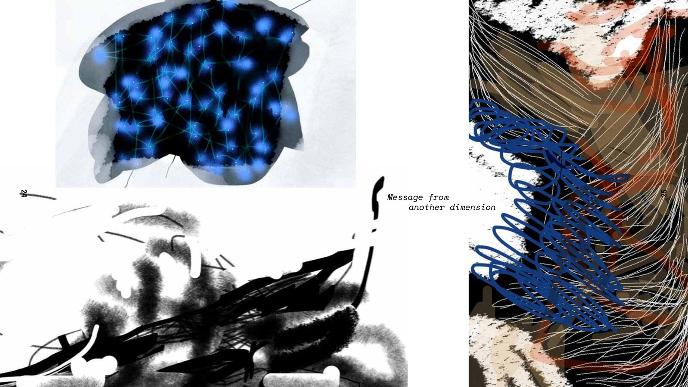
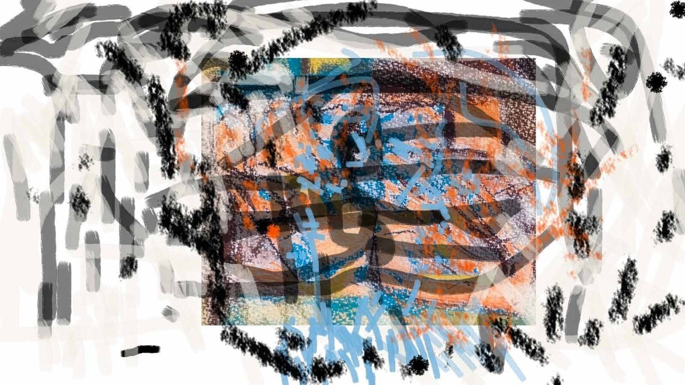

A collaboration with Erin Barach. The book collects her digital drawings, phrases, and poems — made on her phone starting in 2018, intimate studies of outer space, body autonomy, consciousness, privacy, and memory, worked out in small swipes and taps on the same glass screen that also delivers the minutiae and trauma of everyday digital culture.
Why a book
A book was the right form to hold this together: a closed circuit that can be revisited, or just sit on a shelf as part of a reader’s life. Unlike the endless possibilities of a digital space, a book has an order, a life — it ages. Ink imprints on paper vulnerable to smudged fingers. That’s the point.
Designing the contrast
The drawings started as small, glowing, glass-screen objects, native to a phone’s scale and touch. The design plays that against everything only print can do: scale, physicality, sequence. Reading it means turning the book itself — reorienting it partway through — so the layered meaning in the design choices has to be worked for, not scrolled past. The book asks for the reader’s full attention, and, as Erin put it, that’s all any of us really have to give.
Credits
- Erin Barach
- Drawing, writing, editing.
- Kristian Bjørnard
- Book design and some words.
- Nastya Lavryk
- Additional design assistance.
- Joseph Young
- Additional editing.
First printing, November 2025. Purchase options.

